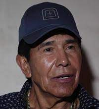
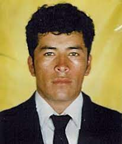

Narcotraficantes mexicanos más famosos en la historiaHéctor Beltrán LeyvaLíder del Cartel de los Beltrán Leyva, arrestado en 2014 y quien murió el 18 de noviembre de 2018 de un paro cardíaco. El Gobierno mexicano llegó a ofrecer por su captura más de 2 millones de dólares, y EE.UU. una recompensa de hasta 5 millones de dólares. Desde 2016, estaba recluido enfrentando un proceso federal. Nemesio Ruben Oseguera Cervantes, El MenchoSe cree que es el líder del Cartel Jalisco Nueva Generación, denominado uno de los más peligrosos, según el Gobierno mexicano. Joaquín "El Chapo" GuzmánFue uno de los narcos más poderosos del mundo, y uno de los hombres más ricos, según la revista Forbes, y que ahora enfrenta un juicio en EE.UU. por 17 cargos relacionados con narcotráfico. Amado Carrillo FuentesConocido como el Señor de los Cielos, por la gran flota de aviones que utilizaba para llevar cocaína de Colombia a México, murió en 1997 tras una cirugía plástica para cambiar su apariencia y evitar ser capturado. Rafael Caro QuinteroEntró a la lista de los fugitivos más buscados del FBI en abril de 2018. El llamado Capo de Capos sigue activo y sería, junto al Mayo Zambada, líder del Cartel de Sinaloa Heriberto Lazcano LazcanoHeriberto Lazcano Lazcano (Apan, Hidalgo, 25 de diciembre de 1974 - Progreso, Coahuila, 7 de octubre de 2012) fue un narcotraficante mexicano, se le conoció por liderar al grupo criminal Los Zetas, exgrupo armado del Cártel del Golfo. Hasta la fecha de su muerte fue considerado el segundo narcotraficante más buscado de México. Miguel Ángel Félix GallardoMiguel Ángel Félix Gallardo (Culiacán, Sinaloa; 8 de enero de 1946), conocido popularmente como «El Jefe de Jefes», es un narcotraficante mexicano. En la década de 1980 fue denominado como el «Zar de la droga» en México. Fue uno de los fundadores del Cártel de Guadalajara y controló por un tiempo todo el tráfico ilegal de drogas de México a los Estados Unidos 
El Chino ÁntraxJosé Rodrigo Aréchiga Gamboa, conocido como el Chino Ántrax (Culiacán, 15 de junio de 1980-Culiacán, 16 de mayo de 2020),1fue un narcotraficante mexicano fundador y líder de la célula criminal Los Ántrax, brazo armado del Cártel de Sinaloa. Ismael Zambada GarcíaIsmael Mario Zambada García (El Álamo, Sinaloa; 1 de enero de 1948), también conocido por su apodo «El Mayo», es un narcotraficante mexicano que junto con "El Chapo" Guzmán y "El Azul" lideraron el Cártel de Sinaloa. Se presume que, tras la captura de Guzmán y la supuesta muerte de Esparragoza,«El Mayo» quedó como el máximo líder de la organización criminal, pero delegando la mayoría de las operaciones del cartel a varios de los mandos medios Ernesto Fonseca CarrilloFue un jefe del Cártel de Guadalajara junto con Miguel Ángel Félix Gallardo y Rafael Caro Quintero. Fonseca estuvo involucrado con el contrabando de las mismas desde comienzos de los años 1970, principalmente en Ecuador, para luego dedicar sus operaciones en México. |